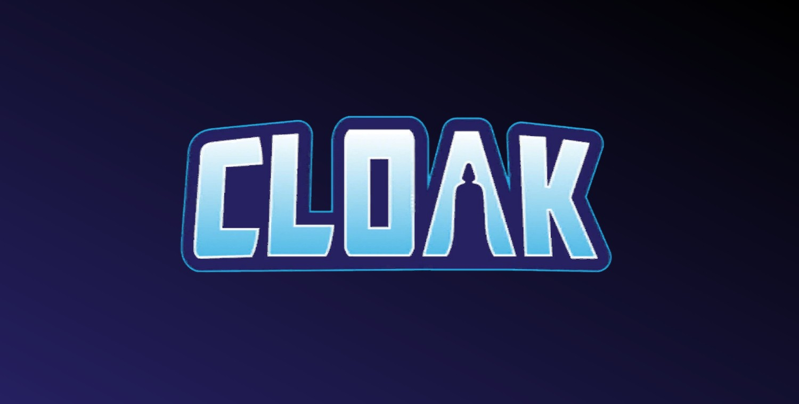
La Cape (Tyrone Johnson) (Terre-616)
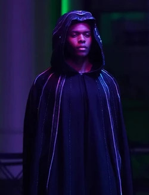
Origines :
Tyrone Johnson est né et a grandi à South Boston.
C'était un élève brillant malgré son bégaiement chronique, un handicap qu'il s'efforçait de maîtriser avec le soutien de son meilleur ami, Billy.
A l'âge de 17 ans, Tyrone et Billy furent témoins du braquage d'un magasin du quartier et du meurtre du vendeur.
Les voleurs prirent la fuite, et Billy s'enfuit également, de peur d'être accusé à tort.
Lorsqu'un policier lui ordonna de s'arrêter, Tyrone tenta de clamer leur innocence, mais son bégaiement l'empêcha de parler distinctement, et le policier tira sur Billy, l'abattant sur le coup.
Se sentant responsable de la mort de son ami et craignant la police, Tyrone s'enfuit à New-York.
Arrivé au terminal de bus de la Port Authority à Manhattan, Tyrone, seul et effrayé, aperçut une jeune fille qui avait également fugué.
Cette dernière était en train de se faire voler son sac, mais Johnson réagit rapidement et plaqua le voleur au sol avant de rendre le sac à main à la jeune fille.
Soulagée et reconnaissante, cette dernière se présenta à Tyrone. Elle s'appelait Tandy Bowen.
Tandy lui proposa ensuite de l'inviter à dîner, et les deux adolescents devinrent rapidement amis.
Lorsque la naïve Tandy accepta l'hospitalité de quelques inconnus, Tyrone, méfiant, les accompagna pour la protéger, mais malheureusement les deux amis furent rapidement livrés de force au chimiste criminel, le Dr Simon Marshall.
Marshall développait une nouvelle drogue de synthèse pour remplacer l'héroïne au sein de la Maggia, et la testait sur des adolescents fugueurs, avec des résultats mortels.
Johnson et Bowen survécurent miraculeusement aux injections et s'enfuirent avec un autre prisonnier, le futur Mister Negative.
Durant leur évasion, Tyrone fut plongé dans les ténèbres et saisi d'une faim étrange, qui s'apaisa en présence de Tandy, qui rayonnait d'une lumière éclatante et apaisante.
Tentant de dissimuler son apparence ténébreuse sous une cape de fortune, Tyrone commença à absorber les hommes de main de Marshall dans ses ténèbres tandis que Tandy les terrassait à l'aide de ses dagues de lumière.
Les deux adolescents se baptisèrent la Cape et l'Épée et jurèrent de protéger les innocents, veillant à ce que la tragédie qui les avait frappés ne se reproduise plus.
Les deux amis développèrent une véritable relation de symbiose mutuelle, fonctionnant comme les deux face d'une même pièce incarnant l'équilibre.
Leurs pouvoirs ont modifié leur chimie corporelle au point de les rendre interdépendants.
La lumière de l'Épée, trop intense, avait besoin de l'énergie froide de la Darkforce de la Cape pour être tempérée, alors que les ténèbres de Tyrone était un abîme de soif requérant l'énergie de la Lightforce que seule Tandy pouvait lui fournir.
Ils incarnent l'unité malgré leurs différences : pouvoir, éducation, vision du monde, milieu social etc.
Ils débutèrent comme justiciers en tuant Marshall malgré l'intervention de Spider-Man, qui les considérait comme des innocents égarés avant de devenir peu à peu leur ami, malgré des tentatives d'assassinat malheureuses contre les chefs du crime Silvermane et le Caïd.
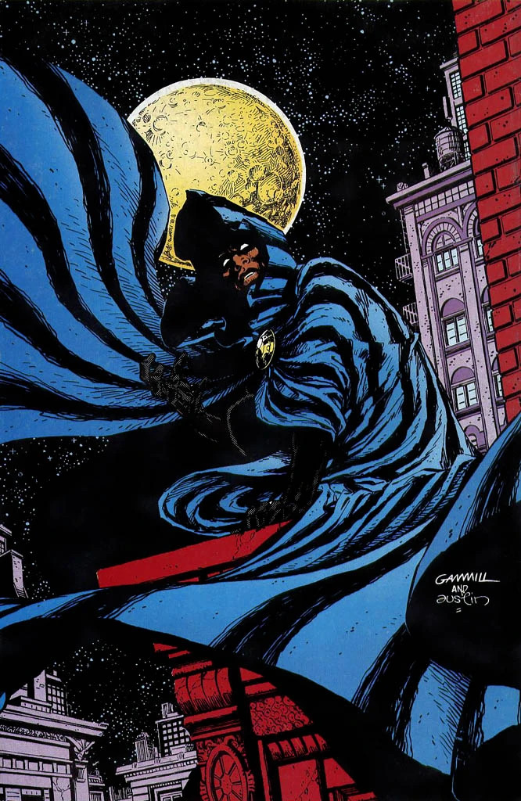
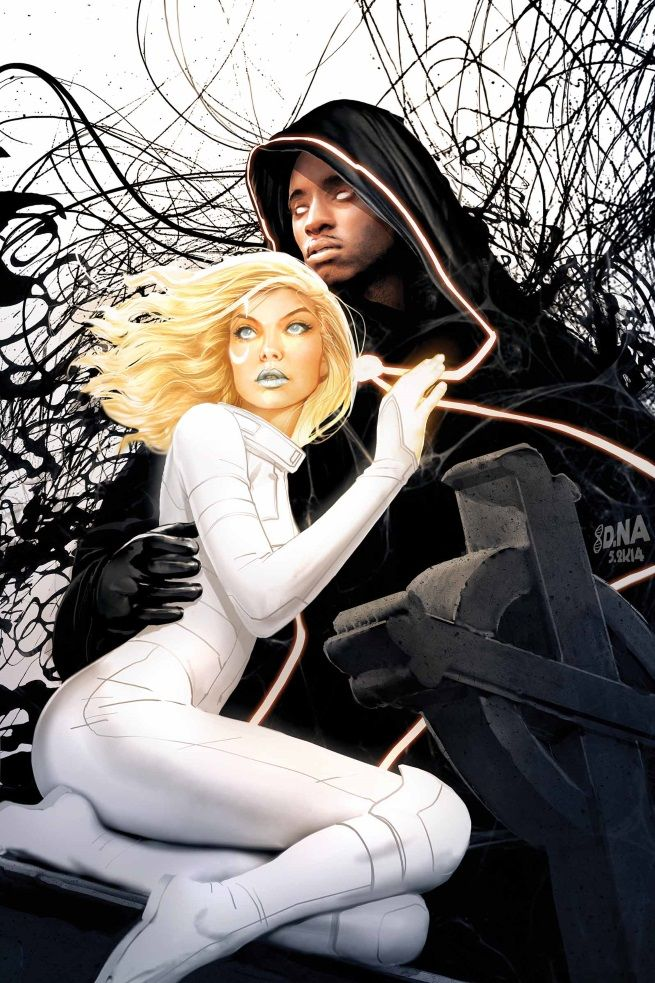
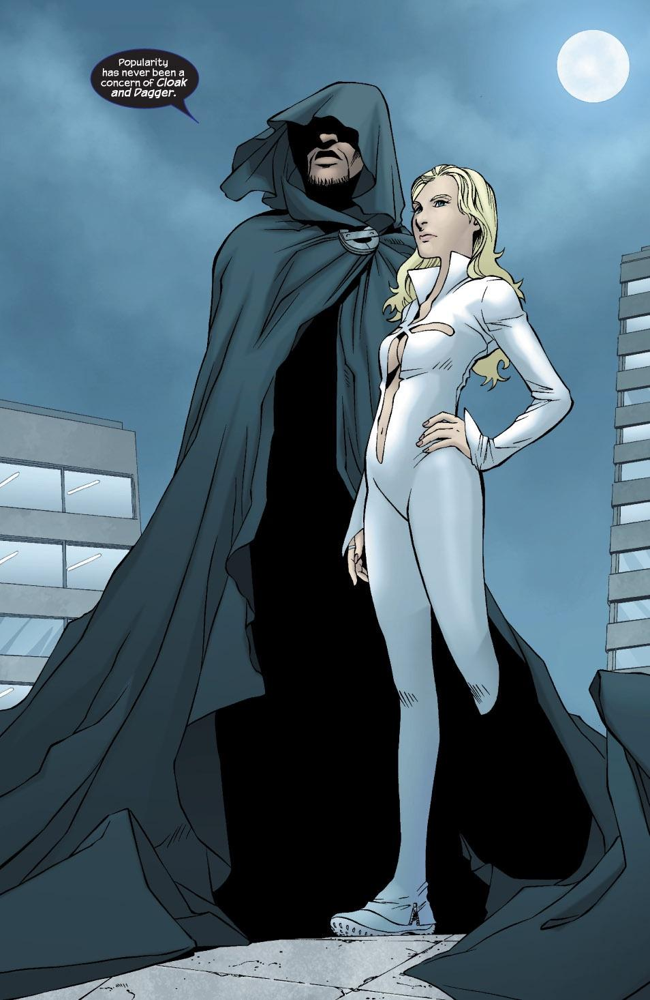

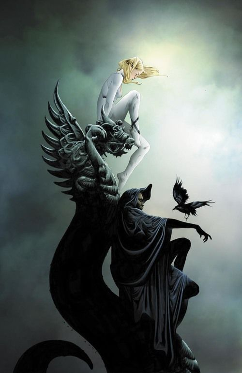
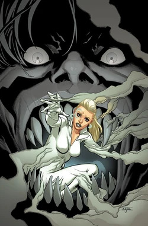

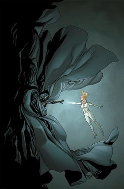

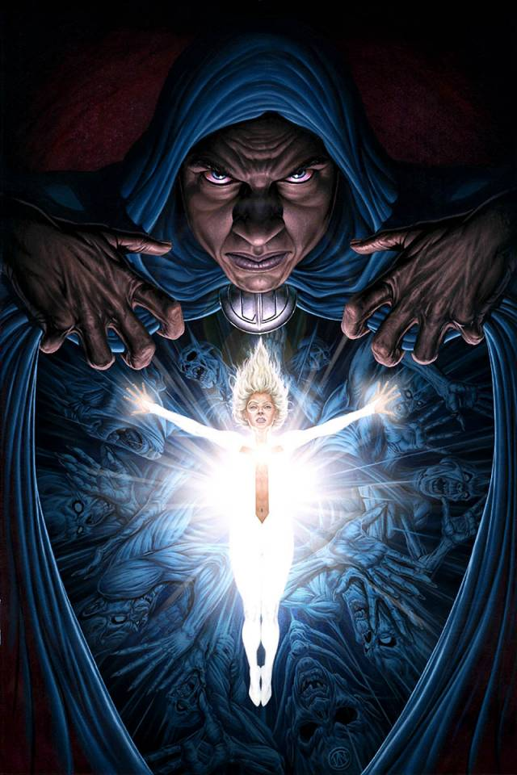
Personnalité :
Tyrone est un adolescent assez réservé et introverti, qui a tendance à garder ses émotions pour lui et à observer avant d'agir.
Son passé difficile l'a rendu méfiant envers les autres et particulièrement aux situations de danger.
Malgré son apparence sombre et ses pouvoirs inquiétants, il possède une fort sens de la compassion, se préoccupant particulièrement des personnes vulnérables comme des jeunes victimes de violence, de criminalité ou d'exploitation.
Il porte encore les séquelles de son enfance et des expériences traumatisantes qu'il a subi.
Ses pouvoirs sont d'ailleurs intimement liés à ses émotions : il est constamment confronté à la Darkforce, qui alimente son sentiment de vide et sa peur.
Capacités :
Tyrone est capable de canaliser et de manipuler l'énergie de la Darkforce à travers son corps et sa cape.
Grâce à elle, il peut ouvrir des passages vers la Darkforce et les utiliser pour se déplacer instantanément, et s'en servir pour transporter plusieurs personnes avec lui.
Avec ses portails, il est capable de créer des ouvertures permettant de relier deux endroits, parfois sur de très grandes distances.
Il peut également rendre son corps en partie, ou totalement intangible en le faisant passer dans la Darkforce, le rendant capable d'éviter les attaques physiques qui le traversent.
L'une des ses caractéristiques emblématiques est sa capacité à absorber la lumière environnante dans la Darkforce, et ainsi plonger une zone entière dans une obscurité quasi-totale.
Sa connexion à la Darkforce lui permet également de percevoir certaines choses qui échapperaient aux sens ordinaires, surtout dans l'obscurité.

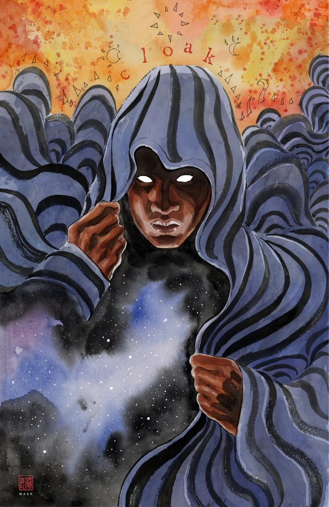
Apparence :
La Cape est généralement représenté comme un jeune homme noir, grand et mince, avec une silhouette plutôt élancée.
Son visage est quasiment toujours dissimulé par l'ombre de sa capuche, accentuant son apparence mystérieuse et inquiétante.
Il porte une grande cape noire à capuche large surnaturelle liée à la Darkforce, qui constitue l'élément central de son costume.
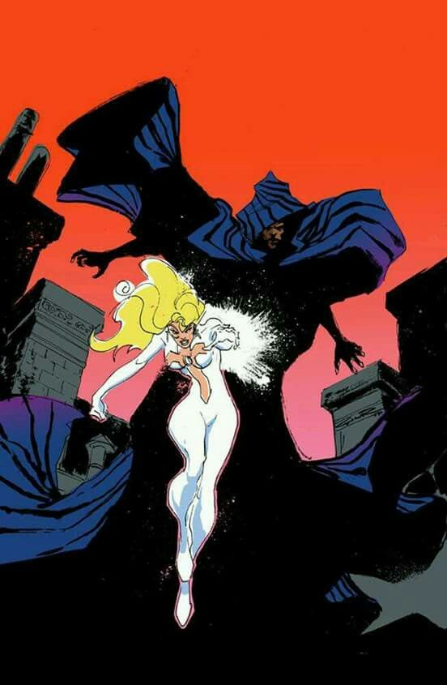

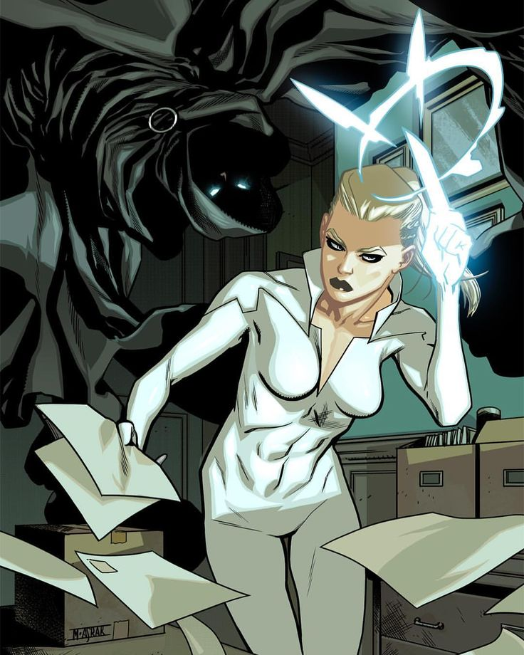
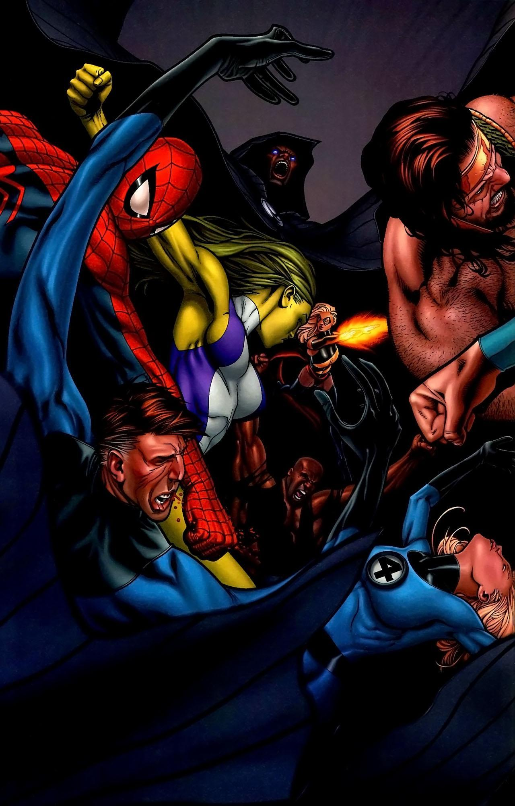
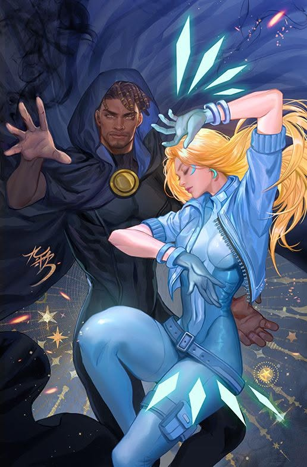
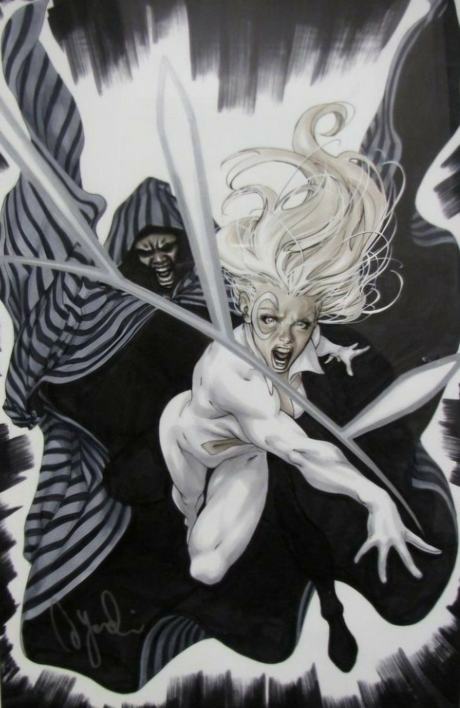
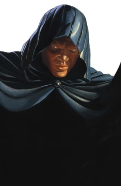
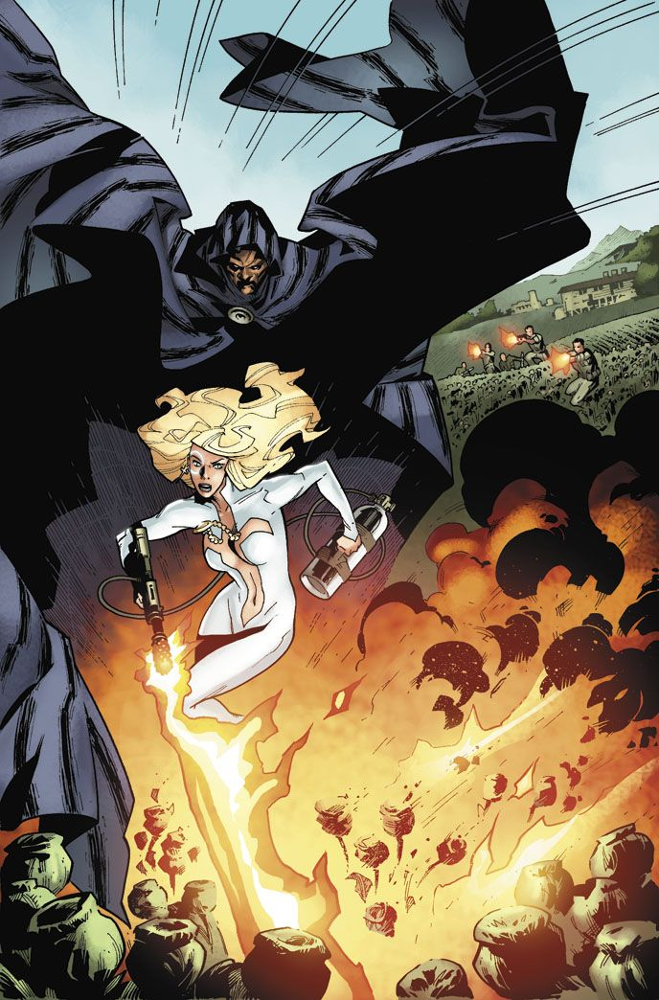

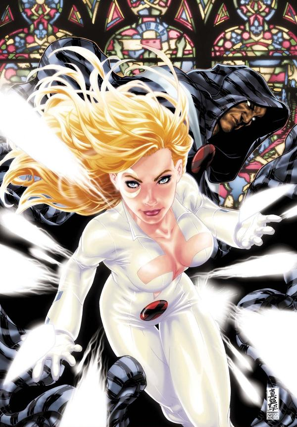


.jpg)
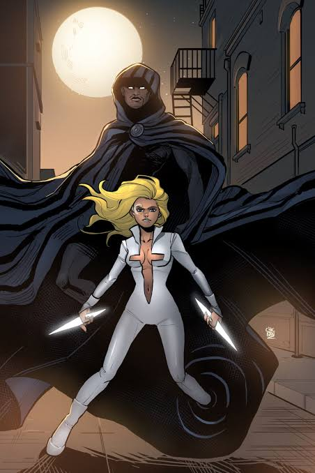
Les principaux ennemis de la Cape


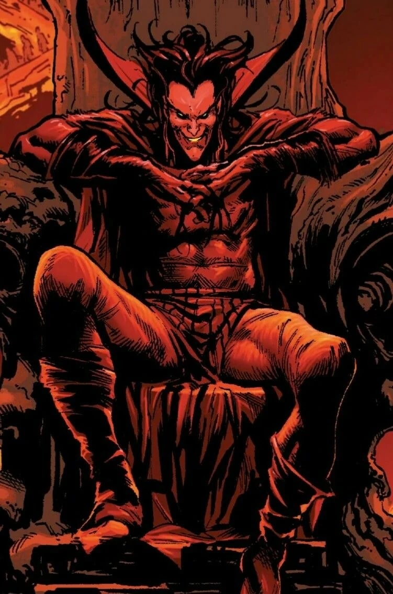
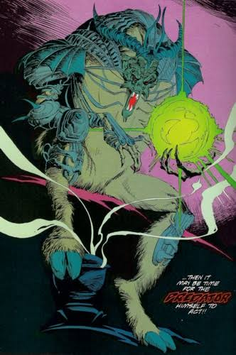
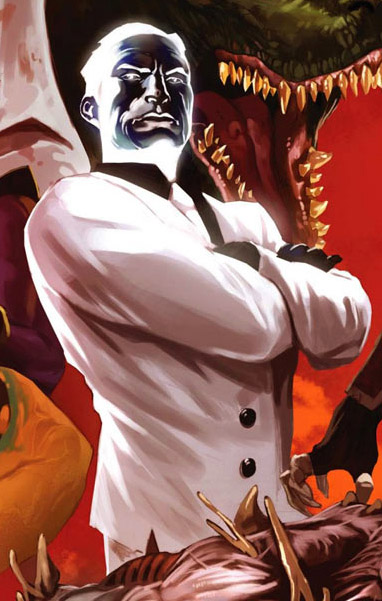
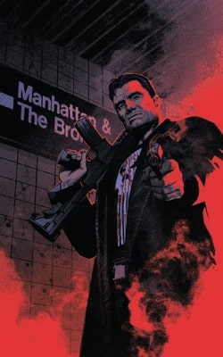
Équipes affiliées